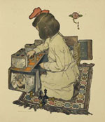
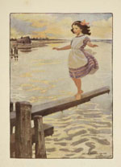

Elizabeth Shippen Green,
American, 1871-1954
Violet Oakley,
American, 1874-1961
Jessie Willcox Smith,
American, 1863-1935
These three women, who styled themselves the Red Rose Girls after
a picturesque inn in Villanova where they lived and worked together,
were phenomenally successful during what has been termed the "golden
age of illustration in America." A very short list of their
notable achievements would include Elizabeth Shippen Green's
exclusive contract with Harper's Magazine, for which
she designed hundreds of covers and interiors over a twenty-three
year period. Violet Oakley
was awarded a commission in 1902 to paint eighteen murals in the
new Pennsylvania State Capitol in Harrisburg, the first time an American
woman artist had been given such a prestigious public commission.
Jesse
Willcox Smith became famous for her idealized pictures of children
and domestic life in Collier's, Harper's, Ladies
Home Journal,
and Scribner's magazines, among many others. In addition
she illustrated more than forty popular books, among them Dickens's
Children, shown here.
The fourth member of the Red Rose Girls was Henrietta Cozens. Cozens
was not an artist, but gardened, cooked, and managed the household
for the other three. Living together in their extended and unconventional
family liberated these women to some extent from domestic distractions,
while the supportive environment they allowed each other encouraged
and sustained them in creating a world where art and life were inseparable.
Frontispiece

|
Title page
|
The Book of the Child was originally designed by Green and Smith as
a calendar. It was so successful that it was republished, with a sentimental
text by the popular author Mabel Humphrey.
The Book of the Child, Mabel Humphrey, New York: Frederick
A. Stokes, 1903.
Graphic Arts Division. Gift of Mrs.
Willard Thorp

"Little Em’ly,” from Dickens’s Children,
Ten Drawings, by Jessie Willcox Smith. New York: Charles Scribner’s
Sons, 1912.
Graphic Arts Division
Other works in the exhibition:
- An Old Country House, by Richard Le Gallienne, illustrated
by Elizabeth Shippen Green.
New York and London: Harper & Brothers, 1902.
Rare Books Division, Collection of J. Harlin O’Connell, Class of 1914,
English Literature of the 1890’s, presented by Patricia O’Connell
Matisse